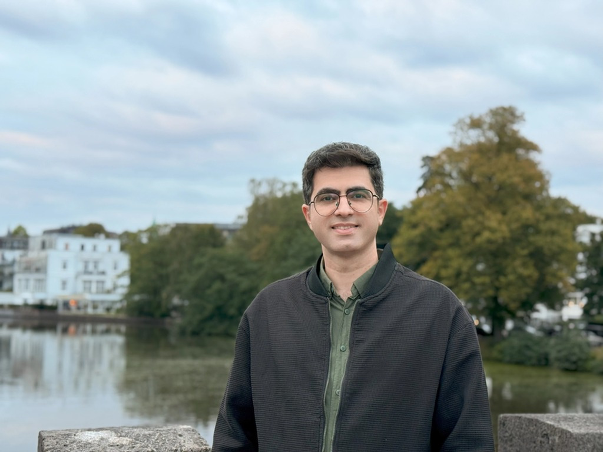

I am an Electrical Engineer based in Denmark with experience spanning electrical design support, technical coordination, execution follow-up, QA/QC-related documentation, commissioning readiness, and handover support across industrial and energy-related projects.
I currently work at Semco Maritime, supporting onshore EPC delivery by working between drawings, BOQs, technical scope, supplier information, document control, quality workflows, and actual site conditions to help keep electrical works technically aligned and execution-ready.
Earlier in my career, I worked across MV/HV switchgear, substations, industrial electrical infrastructure, renewable-energy projects, and server-room / data-centre environments. My academic background also includes power electronics and grid-integration research, reflected in IEEE publications related to MMC, DG, converter control, and smart-grid operation.
Supporting onshore EPC delivery across drawings, BOQs, technical scope, supplier information, QA/QC, document control, and site conditions to help keep electrical works technically aligned and execution-ready.
Worked on MV/HV switchgear, protection support, technical documentation, SCADA / PLC-related integration support, testing follow-up, and engineering clarification activities for industrial electrical systems.
Supported electrical and infrastructure delivery for server-room and data-centre environments with focus on LV distribution, UPS-related systems, grounding, technical records, and coordinated implementation support.
Participated in renewable-energy and utility power projects involving substations, cable systems, switchgear, equipment installation, technical troubleshooting, and field follow-up.
Conducted modelling and simulation work related to smart grids, wind integration, grid behavior, reactive power, harmonics, and power-quality improvement using MATLAB and Python.
For the full publication list, visit Google Scholar or ORCID.
Recipient of a Best Paper Award at the 5th IEEE International Conference on Power Engineering, Energy and Drives (PowerEng 2015).
The best way to reach me is via LinkedIn.